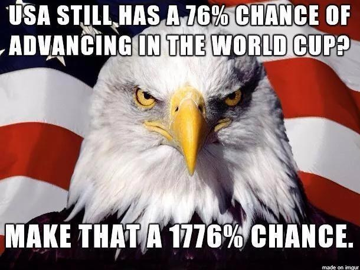
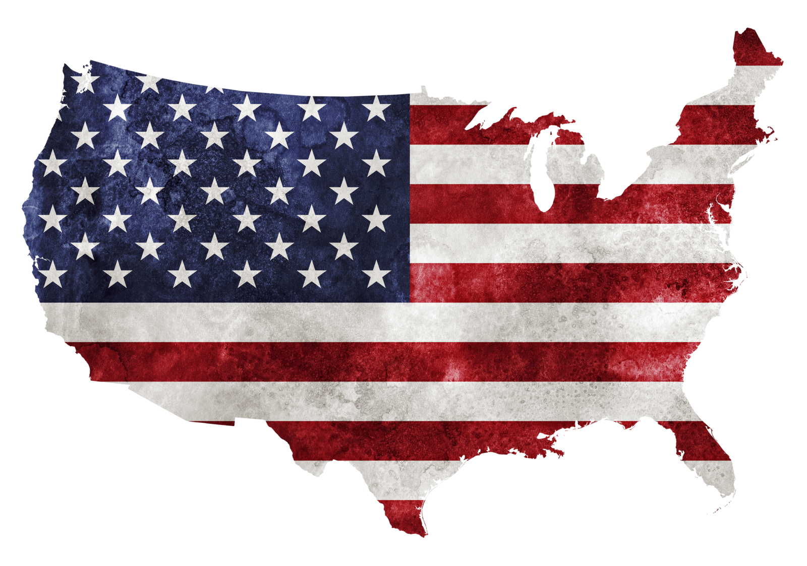
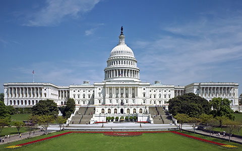

Wesley Harden For President
I'll fight for you!
Why you should elect Wesley P. Harden for president
Fighting for...

The People of the United States, in Order to form a more perfect Union, establish Justice, insure domestic Tranquility, provide for the common defense, promote the general Welfare, and secure the Blessings of Liberty to ourselves and our Posterity, do ordain and establish this Constitution for the United States of America.
What America Needs to Tell The President
What America Needs to Tell The Preesident.I hope he hears it before its too late. Warning: Viewer Discretion is advised.
Our Chances For Winning The Olympics Will Improve when I Implement my New Health Guidelines
In the opening night of the 2016 U.S. Olympic Team Trials for Swimming, Elizabeth Beisel finished second in the 400-meter individual medley behind Maya DiRado. Beisel, 23, earned a silver medal in the event at the London 2012 Olympic Games. Working toward the Rio Games, she pulled muscles in her leg in January 2015 and struggled to come back.
“I can't tell you how emotional today was for me!” she said after the race. “Just so many nerves and doubts over the past year having the injuries and stuff like that, it's hard to block it out, but it's such a relief, such a relief.”
She also competed in the 2008 Games in Beijing. Back then, she was the youngest on the U.S. Olympic Swimming Team. Now, age 23, she is one of the older Team USA swimmers going to Rio.
Also racing the first night of trials, Conor Dwyer, 27, finished second in the 400 freestyle and said, “I don't like losing, but I will take a bid to Rio” (assuming at that point that all second-place finishers would be named to the team).
He followed it up with another second place in the 200 freestyle, giving him a berth in that event in Rio as well as a spot on the men’s 4x200 freestyle team.
Vote for Me...
There is an opinion that parties in free countries are useful checks upon the administration of the government and serve to keep alive the spirit of liberty. This within certain limits is probably true; and in governments of a monarchical cast, patriotism may look with indulgence, if not with favor, upon the spirit of party. But in those of the popular character, in governments purely elective, it is a spirit not to be encouraged. From their natural tendency, it is certain there will always be enough of that spirit for every salutary purpose. And there being constant danger of excess, the effort ought to be by force of public opinion, to mitigate and assuage it. A fire not to be quenched, it demands a uniform vigilance to prevent its bursting into a flame, lest, instead of warming, it should consume (Information provided by BillMoyers.com)
I'll set up 8 Pokestops and 5 Gyms Near The White House If I'm Elected President
Pokémon (ポケモン Pokemon?, /ˈpoʊkeɪˌmɒn, -kᵻ-/ poh-kay-mon, poh-ki-mon)[1][2] is a media franchise owned by The Pokémon Company, a Japanese consortium between Nintendo, Game Freak and Creatures.[3] The franchise was created by Satoshi Tajiri in 1995,[4] and is centered on fictional creatures called "Pokémon", which humans known as Pokémon Trainers catch and train to battle each other for sport.
The franchise began as a pair of video games for the original Game Boy, developed by Game Freak and published by Nintendo. The franchise now spans video games, trading card games, animated television shows and movies, comic books, and toys. Pokémon is the second-most successful and lucrative video game-based media franchise in the world, behind only Nintendo's Mario franchise.[5]
Cumulative sales of the video games (including home console games, such as Hey You, Pikachu! for the Nintendo 64) have reached more than 200 million copies.[6] In November 2005, 4Kids Entertainment, which had managed the non-game related licensing of Pokémon, announced that it had agreed not to renew the Pokémon representation agreement. Pokémon USA Inc. (now The Pokémon Company International), a subsidiary of Japan's Pokémon Co., now oversees all Pokémon licensing outside of Asia.[7] As of May 2016, the Pokémon media franchise has grossed revenues of ¥4.8 trillion worldwide[8] (equivalent to 46.2 billion USD).
The franchise celebrated its tenth anniversary in 2006.[9] The twentieth anniversary was celebrated with a commercial at the 2016 Super Bowl[10] using the theme: "I can do that". 2016 marks the 20th anniversary of the release of the original games, with the company celebrating by airing an ad during Super Bowl 50, and issuing re-releases of Pokémon Red, Blue, and Yellow.[11][12] The year will also see the launch of the next generation of games, Pokémon Sun and Moon, and the release of the new mobile augmented reality game Pokémon Go.